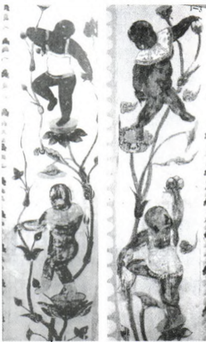
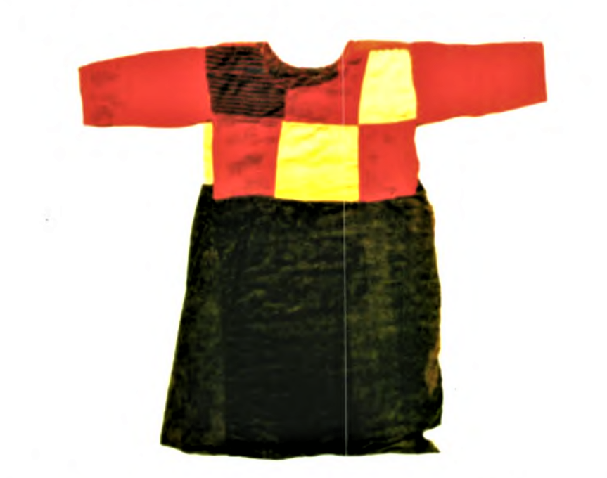
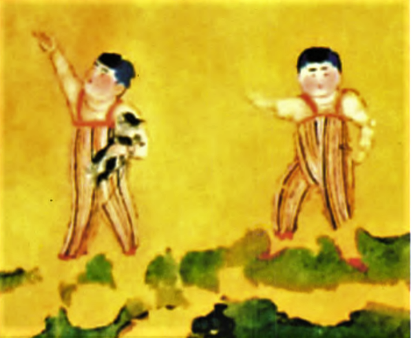

儿童服饰
襁褓
由西安韩森寨的襁褓俑来看，襁褓这一服饰在 唐代已被使用。襁褓，指背负婴儿用的宽带和包裹婴儿的被子，后亦泛指婴儿包。唐代李善在《文选注》中引《博物志》云：“襁，织缕为之，广八寸，长丈二，以约小儿于背上。”颜师古注引孟康日：“褓,被也。”《论语·子路》云：“四方之民襁负其子而至矣。”可见，秦以前的人们已经用襁褓将小儿背于背上。《列子·天瑞》中也有记载：“人生有不见日月，不免襁褓者，吾既已行年九十矣。”《汉书·宣帝纪》 中也有提到：“曾孙虽在襁褓，犹坐收蘩郡邸狱。”这类婴儿襁褓俑的形象，在宋金时期的出土文物中也有所见。襁褓在背负婴儿时，有其便利的一面，如可防止婴儿乱动，方便成人照顾婴儿，以防滑脱。但将一周岁之内的婴幼儿捆绑于襁褓中，根据现代医学的观点，有其不合理性。然而，直至近代，在汉族中，还有给新生儿裹“蜡烛包”的传统习俗，把婴儿的双髋双 膝伸直，外面裹一块布，然后用带子捆扎好。传统观念认为，这样可以防止孩子长大后成“罗圈腿”。
虎头帽
西安韩森寨婴儿襁褓俑头戴一顶“虎头帽”，这也是最早所见儿童佩戴虎头帽的实例。此后，虎头帽、虎头鞋成为中国民间儿童服饰不可或缺的一部分。学者杜文经过考证，认为唐代出现的虎头帽是模仿佛教造像中护法天王头戴虎头帽的形象，同时，唐代还出土了几例头戴虎头帽的武士俑，由此推测，婴儿头戴虎头帽，是人们希望用驱邪镇恶的天王来保佑儿童健康成长。从本质上看，这也是儿童服饰模仿成人服饰的典型实例。
肚兜
儿童着肚兜的形象在唐代儿童图像资料中较为常见，这一款式在唐以前已经出现，如马鞍山三国朱然墓出土“童子对棍图”漆盘，中心绘有两童子持棍对舞的场景，两儿童均身着肚兜形制的服饰。与此款相似的实物，在新疆且末扎滚鲁克墓地也有出土，面料质地为白色毛布，出土时称为“护胸”，此实物可证实这一儿童服饰的真实存在。
围涎
敦煌壁画“化生童子”佩戴围涎的形象在唐及唐以前的图像资料中较少见，但清代已留下不少实物。 关于围涎有文字记载的时间，最早可追溯到汉代。 西汉扬雄所著《方言校笺》卷四，即有提及“繁袼 (躬)”一词，晋代郭璞标注：“即小儿涎衣也。”清代学者郝懿行在《证俗文》卷二中，提到“涎衣，今俗谓之围嘴”，“其状如绣领，裁帛六、七片，合缝，施于颈上，其端缀纽，流涎，转湿移干”。在图中，右上角儿童所戴围涎应为六片合缝，并施以纹饰。围涎的 出现，最早应以实用功能为主。从现代医学的角度来看，也可证实这一点。初生婴儿和幼童时期的孩子，由于发育未全，口水会不自觉地从口中流出，在脖颈处带上围嘴，即可避免弄脏前襟，还可随时转移被口水沾湿处，保持下颌部干燥，避免引发湿疹，对婴幼儿的保健极有利。正因如此，围涎才能发展到今天，并依然被人们所采用。

贯头衫
与贯头衫相似的实物在新疆且末扎滚鲁克墓地一号墓也有发现。该墓出土了大量长袖贯头上衣及4件贯头裙衣，其中有一件儿童贯头裙衣保存较为完整。据此可知，公元6世纪时贯头衫在西域已经非常普及。从唐代墓室壁画，也可见妇女着短袖贯头衫的情形，如新城长公主墓室壁画中描绘的宫女形象，上身外罩圆领短袖贯头衫，下着条纹裙。新疆吐鲁番阿斯塔纳墓出土的骑马女俑，大多上身也着短袖贯头衫。由此可见，贯头形制的短袖衫在唐代妇女及儿童中穿用较为普遍。

背带裤
背带裤也是唐代较有特色的儿童服饰之一。关于背带裤的来源，目前还未定论，它可能是中国北方少数民族的一种服饰。一般来说，儿童服饰在面料的选择上与成人相似，且与当时流行的面料品种及纹样类同。新疆阿斯塔纳墓出土的唐代屏风画“双童图”中，两个儿童均身穿彩色条纹背带裤，这种条纹面料在同时出土的唐代妇女服饰中也较常见，主要穿在外袍的里面。色织的条纹面料最早在战国楚墓出土的服装实物中即可见，至唐代，唐人与西域少数民族服饰的交流与融合愈来愈多，服饰色彩受其影响也渐趋艳丽，出现了多色相间、较细密的条纹面料。在新疆阿斯塔纳墓还出土有类似此条纹面料的实物“八彩晕绸提花绫裙残片”。 此裙残片是“以宝蓝、粉蓝、深绿、淡绿、棕、烟、黄、白八 彩经线，排列成蓝、绿、棕黄三色晕绸系列，与金黄色单一纬线相交，织成不规则的3／1经面山形斜纹地，并以纬长浮线在斜纹上显柿蒂形花纹。这片裙残片的条纹样式与“双童图”中的背带裤及“仕女们”袍内所着裙的样式极为相似，因此可以确定它的真实性。
